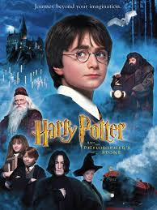

Merhaba ben Sena, yazılım geliştirme alanında çalışmaktayım. Filmlerden, dizilerden, kitaplardan ve fotoğraf çekmekten hoşlanırım.
İlgi Alanlarım
Film
La vita è bella
Harry Potter
Yüzüklerin Efendisi
The war
Dizi
Rick and Morty
Black Mirror
Breaking Bad
Kitap
Beyaz Zenciler
Ana
Yeraltından Notlar
Gorki 3lemesi
Sevdiğim Filmler
La vita è bella
1930'ların İtalya'sında Guido adındaki tasasız, kaygısız bir Yahudi kitapçı yakın bir şehirdeki güzel kadına kur yapıp onunla evlenerek bir peri masalı başlatır. Guido ve karısının bir oğulları olur ve İtalya'yı Alman güçleri istila edene kadar birlikte mutluluk içinde yaşarlar. Ailesini bir arada tutabilmek ve oğlunun Yahudi toplama kamplarının dehşetinden elinden geldiğince uzak tutmak çabası ile Guida bu yıkımı bir oyun gibi gösterir. Bu oyunun kazanma ödülü ise bir tanktır...Daha fazla bilgi için IMDB sayfasına bakabilirsiniz.
Harry Potter

Harry Potter, İngiliz yazar J. K. Rowling tarafından yazılmış yedi fantastik romandan oluşan bir seridir. Romanlar, Hogwarts Cadılık ve Büyücülük Okulu'nda eğitim gören genç büyücü Harry Potter ile arkadaşları Hermione Granger ve Ron Weasley'nin yaşamlarını konu alır.Daha fazla bilgi için IMDB sayfasına bakabilirsiniz.